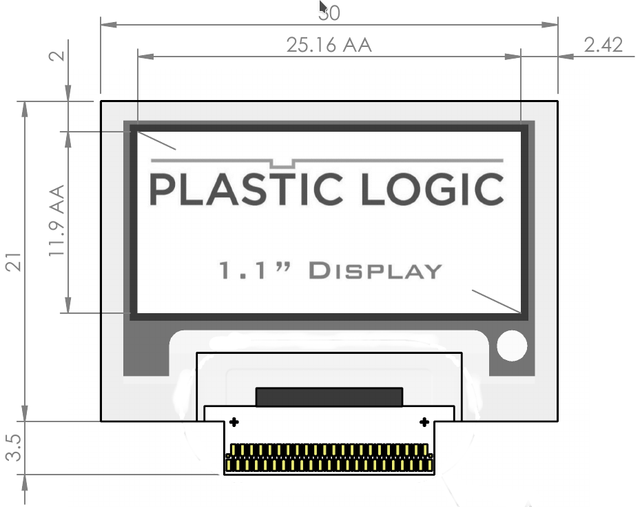
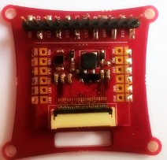
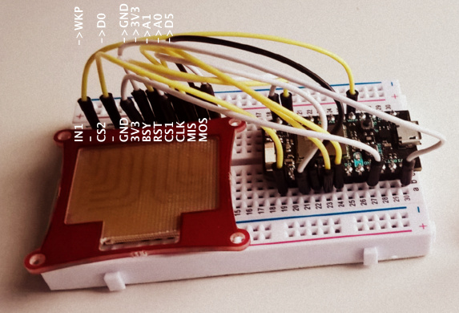

The ePaper hookup guide
In this tutorial we’ll give you a brief introduction to the Paperino ePaper display and the breakout board, then we’ll jump into example hardware hookups and code. The tutorial is split into the following sections:
- Breakout Board – To begin, we’ll go over each of the pins on the breakout board and their function.
- Hardware hookup – In this section we’ll show you how to hook an Arduino up to the display via SPI.
- Using the Adafruit Library – A quick examination of the Micro ePaper family of function calls.
- First Example: Hello World! – The first complete example… let’s make the display blink!
Beside the ePaper breakout board, you’ll need something to control the display. Optimally you’ll want something that has a 3.3V operating voltage. We’ll be using a Particle Photon as an example, which generates and exposes 3V3 on one of the pins.
ePaper display
The ePaper display from Plastic Logic is an eInk-based EPD with 148x70 pixel resolution. It keeps its image content stable without any power, so its perfect for your next connected, ultra-low power project. The display is super thin (less than half a millimeter) and weights just 1.2g!! Actually it’s even bendable, so start thinking now about your next curved product!? ;-)

Breakout Board
The breakout board is the physical interface between the ePaper display and your MCU. It contains a small circuitry to generate the voltages which are needed to switch an ePaper screen. Furthermore it integrates an accelerometer (BMA250) which allows to add additional functionality (like tap detection, portrait/landscape detection, …)

The breakout board provides access to 12 pins. To start with, you’ll only need the first nine pins to make the display work and two further pin to activate the integrated accelerometer. The following table provides an overview of the used pins:
| # | Pin | Function | Photon (example) |
|---|---|---|---|
| 1 | MOS | SPI MOSI | D2 |
| 2 | MIS | SPI MISO | D3 |
| 3 | CLK | SPI clock | D4 |
| 4 | CS1 | SPI chip select for ePaper driver IC | D5 or any other free pin |
| 5 | RST | Digital pin to reset driver IC UC8156 | A0 or any other free pin |
| 6 | BSY | Digital pin to sense activity state of driver IC UC8156 | A1 or any other free pin |
| 7 | 3V3 | Regulated 3.3V power supply | 3V3 |
| 8 | GND | Ground | GND |
| 9 | - | (unused) | (unused) |
| 10 | CS2 | SPI chip select for accelerometer IC | D0 or any other free pin |
| 11 | IN2 | Interrupt line #2, e.g. for tap sensing | A7 or any other free pin |
| 12 | IN1 | Interrupt line #1, e.g. for wake-up of deep sleeping MCU | A7 |
You can wire-up the two remaining pins called IN1 and IN2 later-on. They are required if you want to wake-up your MCU from deep-sleeping, if for example an motion is detected and/or for sensing finger taps on the screen.
Hardware hookup
Now it’s time to wire it up! In this section we’ll go over the hookup, based on an Particle Photon. We’ll be using Particle’s hardware SPI pins in order to achieve the fastest data transfer speed. That means we’ll need to use pins for SPI connection as described in the table above. The other pins – RST, BSY, CS1/CS2 and IN1/IN2 – can be connected to any available digital pin on the Photon.
Here’s the example hookup:

Using the Adafruit GFX Library
Now that we have wired-up the Paperino breakout board with the MCU, it’s time to get started writing your own application! Before you get started, here’s a quick overview of the PL_microEPD library.
At the top of your code, you’ll need to include the Adafruit GFX library together with a library supporting additional fonts (thanks! to Paul Kourany). Finally, you should add the library PL_microEPD which takes care of the communication to the ePaper display in the background.
#include "Adafruit_mfGFX.h"
#include "fonts.h"
#include "PL_microEPD.h"
After you have included the library, you can create an object display in the global variable area of your code. Now its also time to define the pin mapping:
#define EPD_RST A0 //Reset pin, used to restart the driver IC
#define EPD_BUSY A1 //Busy pin, used to sense the activity state of the driver IC
#define EPD_CS D5 //Chip select pin, used to select the EPD driver IC
PL_microEPD display(EPD_CS, EPD_RST, EPD_BUSY);
In the example above we’ve called our PL_MicroEPD object display, but you can call it anything you’d like. You can even create more than one, if you have more displays connected to your MCU.
The last step to the Paperino setup should occur in the setup() function. Stick a display.begin() function in there, which will initialise the display and update all sorts of behind-the-scenes settings for you.
setup() {
display.begin(); //Configure Paperino and all of it’s pins
}
First Example: Hello World!
Now we are ready to let the display blink! You can use the print() command to write your first text in the screen buffer:
display.print(“Hello World!”); //Writes the text “Hello World!” into the image buffer
display.updateFull(); //Refreshing display with the content of the image buffer
The command updateFull() actually triggers the ePaper refresh, displaying the content of the image buffer finally. That’s it! To summarise everything, you can now see the complete code here:
//PAPERINO: Hello World example for the Paperino Micro ePaper breakoutboard
#include "Adafruit_mfGFX.h"
#include "PLD_tinyEPD.h"
#include "fonts.h"
#define EPD_RST A0
#define EPD_BUSY A1
#define EPD_CS D5
PL_tinyEPD display(EPD_CS, EPD_RST, EPD_BUSY);
void setup() {
SPI1.begin();
SPI1.setBitOrder(MSBFIRST);
SPI1.setDataMode(SPI_MODE0);
SPI1.setClockDivider(SPI_CLOCK_DIV4);
display.begin(true);
display.print(“Hello World!”);
display.updateFull();
}
void loop() {
}
That was easy, right? If you want to proceed with the setup of the integrated accelerometer let’s continue with the accelerometer hook-up guide. If you are interested in how to write more complex features on the ePaper we suggest starting with the examples section.